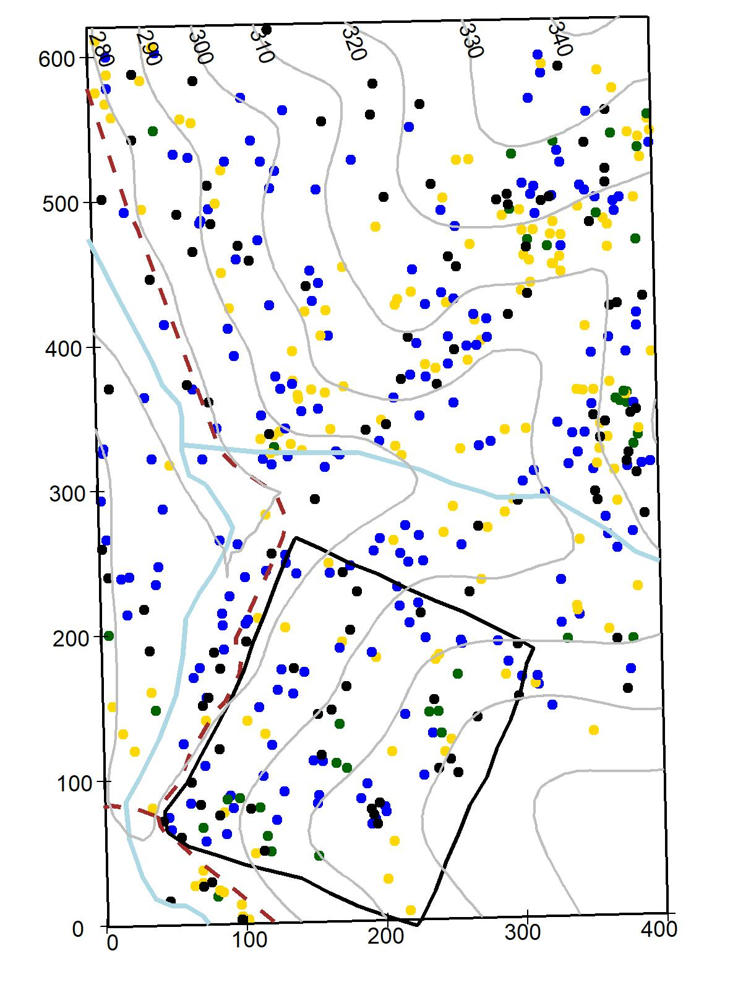
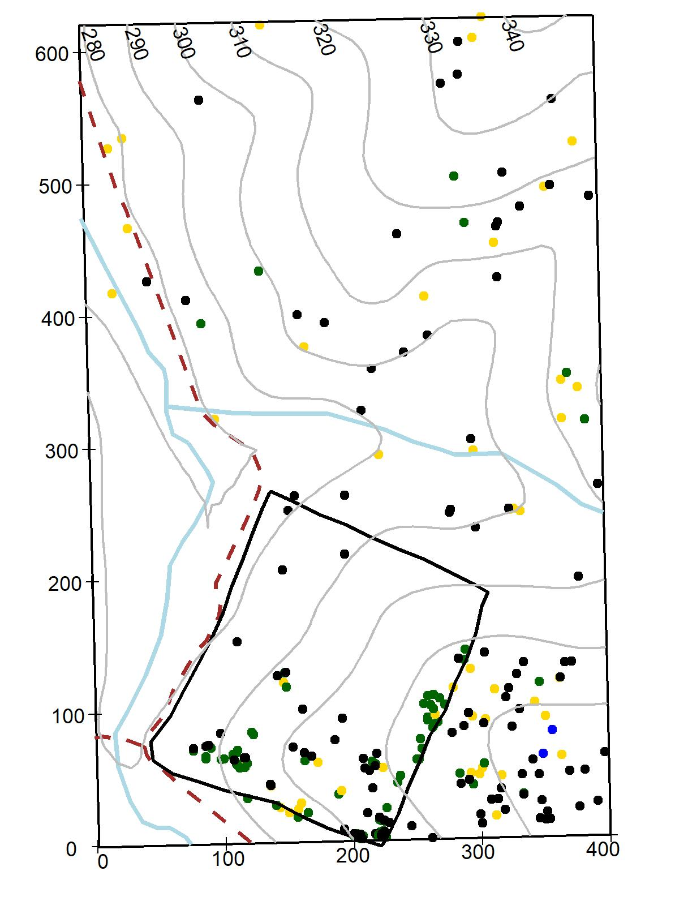
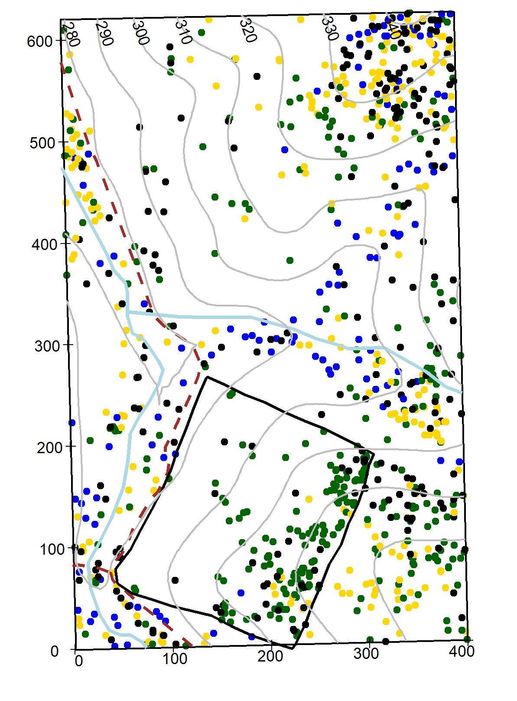
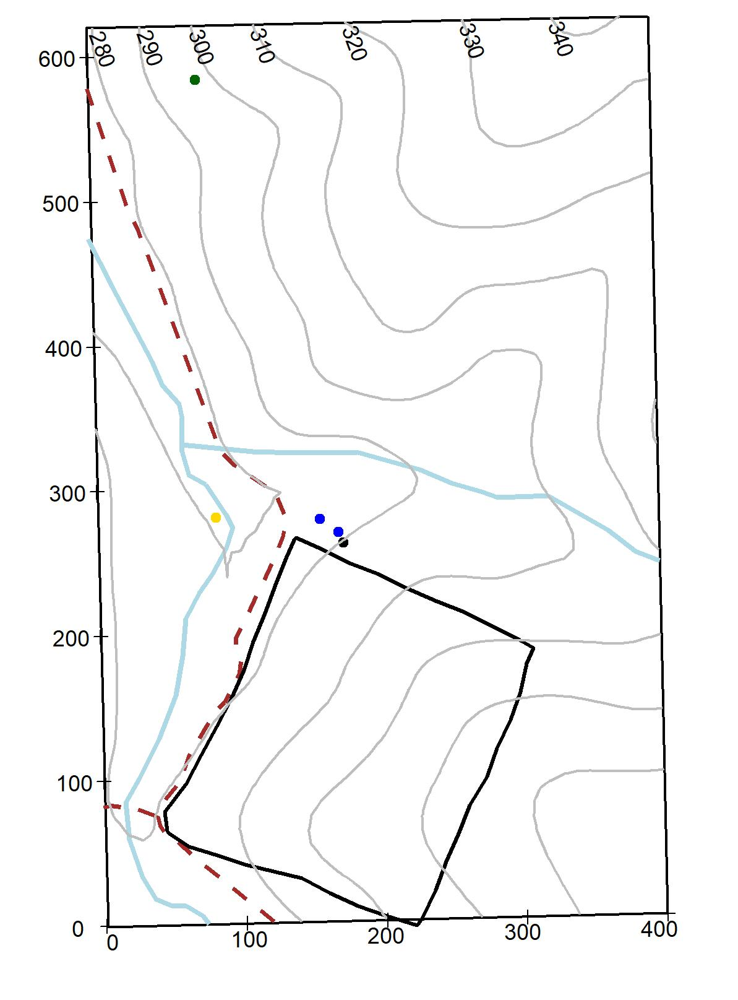
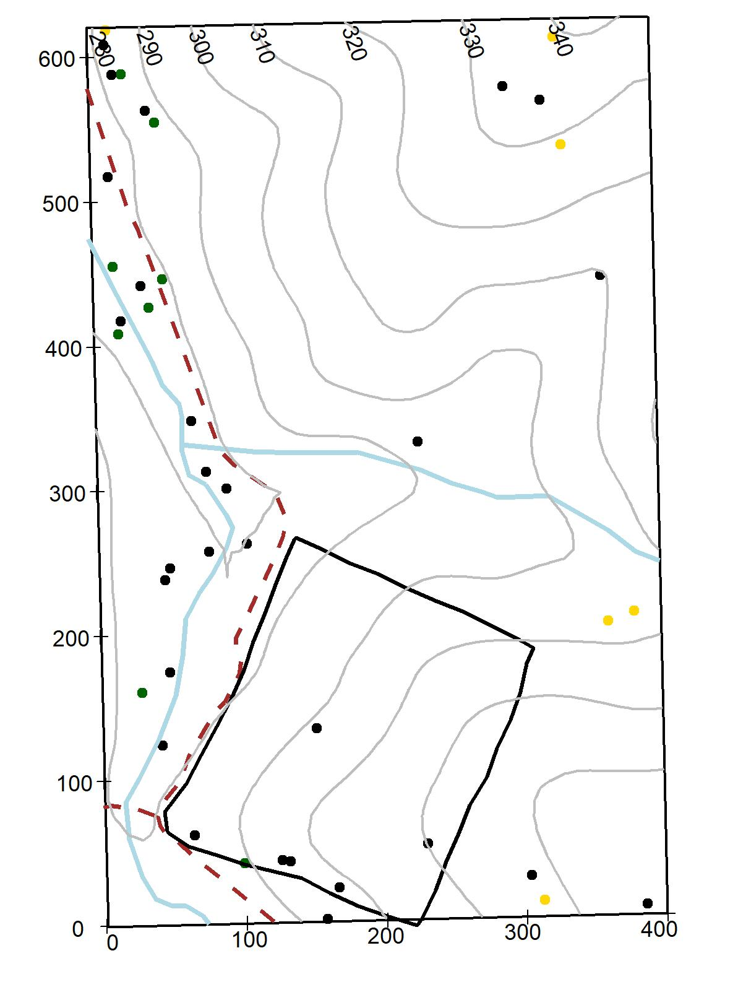

Chapter 3 Species Descriptions
This chapter consist of botanical descriptions and ecological information on the 65 woody species measured within the 25.6- ha SCBI-ForstGEO plot. Species names are arranged alphabetically by family and species; species scientific name, authorship, and common names follow the Flora of Virginia conventions (Weakley, Ludwig, and Townsend 2012). If a synonym for a species name is given, then it is written after the symbol “=” below the species name used in the plot. The following are the main descriptors used for each species.
Botanical descriptions: All species in the plot were given a brief technical plant description summarized from the Flora of Virginia (Weakley, Ludwig, and Townsend 2012) and the “Common Native Trees of Virginia” guide (Powell 2007). Ecological aspects were subtracted from various sources (Weakley, Ludwig, and Townsend 2012, noauthor_missouri_nodate). Local habitat and species distribution refer to those within the plot.
Stratum: Indicates the main canopy position of the species based on the diameter of the species measured at the SCBI plot and by qualitative observations within the forest.
Native status: Indicates if the plant species is native or introduced to Virginia (Weakley, Ludwig, and Townsend 2012).
Conservation status: Conservation status follows the standards from the IUCN Red List categories (“Standards and Petitions Sub-Committee” 2016): Least Concern: populations stable or taxon that do not qualify as threatened. Near threatened: taxon close to qualifying as threatened category in the near future). Vulnerable: A taxon considered to be facing a high risk of extinction in the wild. Endangered: A taxon considered to be facing a very high risk of extinction in the wild. Critically endangered: A taxon considered to be facing an extremely high risk of extinction in the wild.
Field code: Species code used in the field and data sets (first two letters of genus and first two letters of species).
Summary statistics: A table summarizing basic statistics per species per census within the plot, include: number of individual (stems), new stems (total stems recruited and recruitment rate), stems dead and annual mortality rates, minimum and maximum DBH, mean growth rate for stems < and > 10 cm.
Species distribution maps within plot: Distribution of each species within the 25.6 ha plot is illustrated in an individual topographic map (10-m contour lines). The blue lines represent 2 streams running South-North-N and West-East within the plot, the dotted red line represents a gravel road, and the black thick line represents a 4ha deer exclusion stablished in 1990 (Bourg et al. 2013). Diameter for live and dead stems stems are symbolized as follow:by a gradient color scale 1-10 cm DBH, green dot; 10.1-50 cm DBH, yellow dot, and 50.1 cm DBH and above, blue dot; dead stems of any size, are represented by a black dot. The maps illustrate the species as surveyed in 2018.
Species regional range: In the online version of this book, we present species range map for all species within the plot, except for Elaeagnus umbellata. Maps were sourced from the Botanical Information and Ecology Network (“Botanical Information and Ecology Network” n.d.) and depicts the distribution of the species globally.
Pictures and graphs: A leaf or group of leaves images are shown for each species. Leaves were collected fresh, scanned flat and images enhanced using the software GIMP 2.10.8. A 2-cm scale is given in the lower right corner. Pictures of tree cores are shown when available. Those pictures were produced using an Epson Expression 12000XL Photo Scanner. Climate sensitivity graphs built from tree cores show the relationship between multiple climate variables and tree growth, those graphs are only shown for 12 species (see Helcoski et al. (2019) for methods to build graphs).
3.1 Adoxaceae
Sambucus canadensis L.
Common name: Common Elderberry. Species code: saca.
Deciduous shrubs 1-4 m bark smooth with abundant lenticels, hairless; leaves compound, opposite, 15-30 cm, leaflets elliptic to lanceolate, 5-11 cm long, acuminate, margin sharply serrate, dark green above and much paler below; flat-topped cluster of flowers (cymes) 5-20 cm wide, flowers white, 3-4 mm, fragant; fruits drupes, 3-6 mm, deep purple or black, borne in flat-topped clusters. Infrequent through the plot, mostly occurring in damp soils. Stratum: understory. Native. Conservation status: Least concern.

Viburnum acerifolium L.
Common name: Mapleleaf Viburnum. Species code: viac.
Deciduous shrubs, stems 1-2 m, bark smooth, twigs pubescent when young; leaves simple, opposite, 5-10 cm long, ovate or orbicular, rounded or hart-shape basally, palmately veined, three lobed, margin coarsely dentate, pubescent; flowers small, white, appearing in flat topped clusters 2-9 cm wide; drupes globose, 6-9 mm, black or purplish black, occurring in flat topped clusters. Infrequent through the plot, growing in dry areas. Stratum: understory. Native. Conservation status: Least concern.

Viburnum prunifolium L.
Common name: Black Haw. Species code: vipr.
Deciduous shrubs up to 8 m bark gray-brown breaking up into small square plates; leaves simple, opposite, 3-8 cm long, oval or oblong to elliptic, margin finely serrate, dark green above and paler below.; flowers very small, white appearing in dense slightly rounded clusters 5-10 cm wide; drupes ellipsoid to subglobose, 8-15 mm, blue-black, hanging in clusters. Common through the plot, in wet to dry areas. Stratum: understory. Native. Conservation status: Least concern.

Viburnum recognitum Fernald
= Virbunum dentatum L. var. lucidum
Common name: Arrow-wood. Species code: vire.
Deciduous shrubs up to 4 m, bark reddish to grayish brown, twigs slender, hairless or slightly pubescent; leaves simple, opposite, 3-8 cm long, ovate to elliptic margin coarsely serrate, shiny dark green above, finely pubescent underside, hair confined to veins axils; flowers small, white appearing in flat topped clusters 3-11 cm wide; drupes subglobose to ellipsoid, 6-8 mm, blue-black, occurring in clusters. Rare through the plot, growing in dry areas. Stratum: understory. Native. Conservation status: Least concern.

3.2 Annonaceae
Asimina triloba (L.) Dunal
Common name: Pawpaw, Common Pawpaw. Species code: astr.
Shrubs or trees up to 15 m, bark brown, smooth; leaves simple, alternate, 10-35 cm long, obovate-oblong to lanceolate, acute tip, glabrous above, pubescent below; flowers 2-4 cm wide, dark purple to brown; fruit green berries 3-5 cm large, pulpy, edible, resembling a green mango. Growing in semi-wet areas in the plot, evident clonal patch distribution. Stratum: understory. Native. Conservation status: Least concern.

3.3 Aquifoliaceae
Ilex verticillata (L.) A. Gray
Common name: Winterberry. Species code: ilve.
Shrubs up to 8 m, rarely resembling a tree, stems glabrous or pubescent; leaves simple, alternate, 2-10 cm long, lanceolate to round-ovate to elliptic, lustrous above, pubescent below, margin serrate; very small flowers growing as clusters at the branch base, flowers white; drupes globose, small 5-7 mm, bright red to yellow. Rare through the plot. Stratum: understory. Native. Conservation status: Least concern.
3.4 Berberidaceae
Berberis thunbergii DC.
Common name: Japanese Barberry. Species code: beth.
Shrubs up to 2 m, compact, densely branched with thorny stems, bark gray-brown, finely shredded, twigs slender, angled and zigzagged; leaves simple, alternate, 5-30 mm long, spatulate to obovate; flowers solitary or in small clusters, pale yellow, berries ellipsoid to globose, 6-8 mm, showy red. Rare through the plot. Stratum: understory. Introduced (exotic, highly invasive). Conservation status: Least concern.

3.5 Betulaceae
Carpinus caroliniana Walt.
Common name: American Hornbeam, Ironwood, Muscle tree. Species code: caca.
Small tree or shrub up to 12 m, trunks with irregular, longitudinal ridges, bark smooth and tight; leaves simple, alternate, 3-12 cm long, ovate to elliptic, margin double serrated; flowers small, solitary or in clusters, occurring in long pendulous catkins 2-5 cm long, petals light yellow-green; fruit small nutlet covered by a 3-lobed leafy bract. Abundant in wet areas and inside the deer exclosure. Stratum: understory. Native. Conservation status: Least concern.

Corylus americana Walt.
Common name: American Hazelnut, American Filbert. Species code: coam.
Shrubs up to 3.5 m, growing in colonies, twigs pubescent with small glands –lenticels- on bark; leaves simple, alternate, 7-15 cm long, broadly ovate to oval, margins finely double serrate; male flowers green-yellow catkins or female flowers inconspicuous with red styles of the pistils protruding, solitary or in clusters; fruits a small brown, globose nut, covered by leafy bracts, edible. Very rare through the plot. Stratum: understory. Native. Conservation status: Least concern.
3.6 Cannabaceae
Celtis occidentalis L.
Common name: Common Hackberry, Northern Hackberry. Species code: ceoc.
Tree or thick shrubs up to 25 m bark smooth and gray-brown when young, soon developing corky, irregular ridges at maturity, twigs slender, in zigzag, with numerous lenticels; leaves simple, alternate, 5-12 cm long, rounded or truncate 3-nerved, sometimes pubescent, margins serrate; flowers very small, 2-4 mm, light green; fruit rounded drupes, 7-14 mm in diameter, ellipsoid to globose, dark red to black. Infrequent through the plot. Stratum: understory. Native. Conservation status: Least concern.
3.7 Caprifoliaceae
Lonicera maackii (Rupr.) Maxim
Common name: Amur honeysuckle. Species code: loma.
Shrubs up to 5 m, multi-stemmed, bark with long, deep fissures, grayish brown, twigs hairless or slightly pubescent; leaves simple, opposite, 3.5-8.5 cm long, ovate to lance-ovate, 5-7 cm, slightly pubescent on veins underneath: flowers1.5-2.5 cm long, occurring in pairs, very fragrant, petals white becoming yellow; fruit a globose berry, 4-7 mm in diameter, dark red. Infrequent through the plot. Stratum: understory. Introduced, highly invasive. Conservation status: Least concern.
3.8 Celastracea
Euonymus alatus (Thunb.) Sieb.
Common name: Winged Euonymus, Burning Bush. Species code: eual.
Shrubs up to 2.5 m, bark gray to gray-brown, splitting revealing a lighter inner bark, twigs green, 4-angled with 2-4 conspicuous wings; leaves simple, opposite,6-8 cm long, elliptical to obovate, margin sharply serrate; flowers solitaries or in clusters of 3, very small, 6-8 mm wide, yellow-green; fruits a small 1-1.5 cm capsule, dark red. Rare through the plot. Stratum: understory. Introduced, highly invasive. Conservation status: Least concern.

3.9 Cornaceae
Cornus alternifolia L. f.
Common name: Alternate-leaf Dogwood, Pagoda Cornel, Pagoda Dogwood. Species code: coal.
Shrub or small tree up to 8 m, branches spreading young bark smooth, dark-green; leaves simple, alternate, 4-10 cm long, ovate to oblong to elliptic, pubescent and whitish below, crowded at the end of branchlets; flowers small, in cymes, flat topped, white petals flowers appearing before the leaves; fruits 4-7 mm, drupes, globose, blue. Rare through the plot (only 2 living individuals). Stratum: understory. Native. Conservation status: Least concern.

Cornus florida L.
Common name: Flowering Dogwood. Species code: cofl.
Large shrub or small tree up to 10 m, bark reddish brown to black, branches wide; leaves simple, alternate, 6-13 cm long, ovate or elliptic to obovate, slightly pubescent and whitish below; flowers small, in cymes, flat topped, petals white, creamy or rarely pink subtended by bracts, flowers appearing before the leaves; fruits drupes 8-18 mm, subglobose, dark to bright red, in clusters of 5-6 drupes. Common through the plot although evidence of Anthracnose fungus is evident. Stratum: understory. Native. Conservation status: Least concern.

3.10 Ebenaceae
Diospyros virginiana L.
Common name: Common Persimmon, American Persimmon. Species code: divi.
Trees up to 10 m, bark distinctive dark grey, deeply furrowed forming semi-square blocks; leaves simple, alternate, 5-15 cm long, ovate to oblong, slightly thick; flowers usually solitary and dioecious (separate male and female trees), yellow to greenish-yellow flowers, fragrant; fruits a globose berry 2-4 cm, green and astringent while ripening then pulpy and sweet when ripe, edible. Uncommon through the plot. Stratum: sub-canopy. Native. Conservation status: Least concern.
3.11 Elaeagnaceae
Elaeagnus umbellata Thunb.
Common name: Autumn Olive. Species code: elum.
Shrubby trees up to 5 m; leaves simple, alternate, 3-8 cm long, elliptic to ovate, slightly undulate, shiny, silvery on undersides of leaves, pale green on top; flowers in clusters of 5-10, pale white to yellow and heavily fragrant; fruits a small berry 8-10 mm, bright red. Rare through the plot. Stratum: understory. Introduced, highly invasive. Conservation status: Least concern.

3.12 Fabaceae
Cercis canadensis L.
Common name: Eastern Redbud. Species code: ceca.
Small trees up to 12 m, stem widely branched, bark with shallow grooves, twigs reddish-brown; leaves simple, alternate, 6-11 cm long, broad with heart shape base, pubescent below; flowers in clusters, growing on trunk, flowers 10-12 mm, reddish or pink; fruits a small legume (5-8 cm), conspicuously veined, flatten when dry. Common through the plot. Stratum: understory. Native. Conservation status: Least concern.

Robinia pseudoacacia L.
Common name: Black Locust. Species code: rops.
Trees up to 30 m, trunk deeply furrowed, bark coarse, branches and twigs sometimes pubescent, thorns on stems and twigs, rugged bark; leaves compound, alternate, 15-30 cm long, leaflet elliptic to oblong, 1.5-6 cm long, with or without minute hair; flowers on drooping racemes with 3-20 flowers of 8 -10 mm, white with yellow patches, fragrant; fruits a legume, flat purple-brown seed pods (to 13-15 cm long). Common through the plot. Stratum: canopy. Native. Conservation status: Least concern.

3.13 Fagaceae
Castanea dentata (Marsh.) Borkh.
Common name: American Chestnut. Species code: cade.
Trees up to 30 m, bark dark, mostly smooth, shallowly fissured into broad in flat ridges in mature individuals, twigs chestnut brown, puberulent or glabrous; leaves simple, alternate, 10-30 cm long, elliptic to oblanceolate, coarsely serrate with forward pointing incurved teeth, glabrate to glabrous; inflorescences unisexual, flowers many, very small, pale green to cream colored, male flowers found tightly occurring along 10-15 cm catkins; females found near base of catkins (near twig); fruits a spiny covered husk splitting into 4-sections enclosing 2-5 nuts; nuts 18-25 mm diameter. Rare through the plot. Stratum: canopy and sub-canopy. Native. Conservation status: Critically endangered.

Fagus grandifolia Ehrh.
Common name: American Beech. Species code: fagr.
Large trees up to 33 m, bark gray and smooth, twigs slender and glabrous, in zigzag with buds slender and sharply pointy (notable in the winter); leaves simple, alternate, 5-15 cm long, elliptic to ovate, sharply serrate, mostly glabrous; light brown leaves persistent through winter; inflorescences unisexual, flowers many, very small, yellow-cream colored, male flowers occurring along 5-10 cm catkins; female flowers found near base of catkins; fruits a spiny covered husk splitting into 3-sections 1-10 mm, enclosing 1 nut; nuts sharp with 3 angles. Abundant through the plot. Stratum: from understory to canopy. Native. Conservation status: Least concern.

Quercus alba L.
 Common name: White oak. Species code: qual.
Common name: White oak. Species code: qual.
Trees up to 38 m, bark light gray, flaky, with ridges or sometimes checked, twigs glabrous, red-brown; leaves simple, alternate, 5-25 cm long, oblong to obovate, with 7-10 rounded finger-like lobes, sinus depth varies from deep to shallow, margin smooth, glabrous above, pale to slightly white below; inflorescences unisexual, flowers many, male flowers yellow-green, occurring in slender catkins 5-10 cm; females flowers reddish-green and appear as very small single spikes; fruits an ovoid to oblong acorn 1.5-3 cm, caps bowl-shaped covering ¼ of the fruit, cap detach at maturity. Common through the plot. Stratum: canopy. Native. Conservation status: Least concern.
Quercus coccinea Muenchh.
Common name: Scarlet oak. Species code: quco.
Trees up to 35 m, bark gray, with slightly paler ridges, inner bark reddish-brown, twigs glabrous; leaves simple, alternate, 7-20 cm long, ovate to obovate with 2-3 pairs of deeply cut lobes, margin smooth but with bristled tips, glabrous and shiny above with clusters of hair in vein axes below, bright red in the fall; inflorescences unisexual, flowers many, male flowers yellow-green, occurring in slender catkins 5-10 cm; females flowers reddish-green and appear as very small single spikes; fruits an ovoid acorn 1.3-2.7 cm, caps bowl-shaped covering ½ of the nut, scales tightly appressed, shiny. Very rare through the plot. Stratum: canopy. Native. Conservation status: Least concern.

Quercus falcata Michx.
Common name: Southern Red Oak, Spanish Oak. Species code: qufa.
Trees up to 35 m, bark very dark, shallowly furrowed, inner bark pale yellow, twigs pubescent; leaves simple, alternate, 8-20 cm long, ovate to obovate with a bell-shaped at the base with 1-3 pair of lobes, the primary-central lobes long and narrow, margin smooth but with bristled tips, shiny above and paler and fuzzy below; inflorescences unisexual, flowers many, male flowers yellow-green, occurring in catkins 5-10 cm; females flowers reddish born on short spikes; fruits a subglobose to ovoid acorn 1-1.5 cm, pubescent, caps thin and saucer-shaped covering ½ of the nut, with orange-brown scales tightly appressed. Very rare through the plot. Stratum: canopy. Native. Conservation status: Least concern.

Quercus michauxii Nutt.
Common name: Swamp Chestnut Oak, Basket Oak. Species code: qufa.
Trees up to 40 m, bark pale gray, flaky or with ridges; leaves simple, alternate, 6-18 cm long, oval to obovate, margin with large round blunt ascending teeth, lamina dark green and shiny above and pubescent below; inflorescences unisexual, male flowers yellow-green, occurring in catkins 5-10 cm; females flowers green to reddish, very small in leaf axils; fruits an ovoid acorn 2.5-3.5 cm, caps bawl-shaped covering ½ of the nut, caps rough scaly. Rare through the plot. Stratum: canopy. Native. Conservation status: Least concern.

Quercus montana Willd.
Common name: Chestnut Oak, Rock Chestnut Oak. Species code: qupr.
Trees up to 35 m, bark dark, thick, tight and deeply furrowed, twigs hairless; leaves simple, alternate, 10-30 cm long, obovate to oblong or elliptic, margin crenate, shiny green above and fine pubescent and paler below; inflorescences unisexual, male flowers yellow-green, occurring in catkins 5-10 cm; females flowers reddish born on short spikes; fruits an ovoid acorn 2.5-4 cm, caps thin and funnel-shaped covering ½ of the nut. Common through the plot. Stratum: canopy. Native. Conservation status: Least concern.

Quercus muehlenbergii Engelm.

Quercus rubra L.
Common name: Northern Red Oak. Species code: quru.
Trees up to 40 m, bark smooth in young stems then broken into light gray, flat ridges separated by darker, broad and shallow furrows when maturing, inner bark reddish, twigs hairless and reddish brown; leaves simple, alternate, 10-24 cm long, widely obovate, with 3-5 pair of bristle-tipped lobes, sinuses extending 1/3 to 1/2 of the way to midvein; margin smooth, lamina dull green to blue-green and hairless above, often with small turf of hairs in the vein axils below; inflorescences unisexual, flowers many, male flowers yellow-green, borne in catkins 5-10 cm; females flowers born on short spikes; fruits an ovoid to ellipsoid acorn 2-3 cm, caps saucer-shaped covering 1/4 of the nut. Common and dominant through the plot. Stratum: canopy and subcanopy. Native. Conservation status: Least concern.

Quercus velutina Lam.
Common name: Black Oak. Species code: quve.
Trees up to 35 m, bark very dark, rough and scaly, with low ridges, inner bark orange-yellow, twigs hairless; leaves simple, alternate, 10-25 cm long, ovate-oblong to obovate, with 2-3 pair of lobes, with sinuses from shallow to deep, lamina thick, dull green slightly pubescent above, star-shape pubescence below; inflorescences unisexual, flowers many, male flowers yellow-green, borne in catkins 5-10 cm; females flowers born on short spikes; fruits an ovoid acorn 1-2.5 cm, caps bowl shaped, covering ½ of the nut, scales pubescent. Common through the plot. Stratum: canopy. Native. Conservation status: Least concern.

3.14 Hamamelidaceae
Hamamelis virginiana L. var. virginiana
Common name: Witch hazel. Species code: havi.
Shrub or small trees, 5-8 m tall, bark smooth, gray to gray-brown, twigs hairless or fine pubescent; leaves simple, alternate, 7-15 cm long, broadly ovate to obovate, inequilateral, coarsely lobed to toothed, lamina densely pubescent when young, hairless when mature, paler below; inflorescences in cluster of 3 flowers, pale yellow and very slender petals; fruits a capsule 1-1.5 cm, oblong to ovoid, densely pubescent. Common through the plot. Stratum: canopy. Native. Conservation status: Least concern.

3.15 Juglandaceae
Carya cordiformis (Wangenh.) K. Koch
Common name: Bitternut Hickory. Species code: caco.
Trees up to 40 m, bark tight, shallowly ridged when mature, twigs slender with a bright sulfur-yellow terminal bud; leaves compound, alternate, 17-25 cm long, leaflets 7-11, lanceolate, margin serrate, dark green above, paler and pubescent beneath; inflorescences unisexual, male flowers yellow-green in drooping catkins with 3 hanging from one stalk, 7-10 cm long; female flowers short and solitary; fruits a subglobose to ovoid nut 2-3.5 cm, slightly flattened, splitting incomplete from the middle to the sharp-pointed tip; husk 4-winged above the middle, often dusty-yellow looking. Common through the plot. Stratum: canopy. Native. Conservation status: Least concern.

Carya glabra (P. Mill.)
Common name: Pignut Hickory. Species code: cagl.
Trees up to 45 m, bark tight, deeply furrowed at maturity, twigs slender; leaves compound, alternate, 20-30 cm long, leaflets 5 but sometimes 3-7, lanceolate and serrate margin, dark green above, paler and pubescent beneath; inflorescences unisexual, male flowers yellow-green in drooping catkins with 3 hanging from one stalk, 7-10 cm long; female flowers short and solitary, found in clusters at the end of branches; fruits a nut, pear-shaped to ellipsoid 2-4 cm, slightly flattened, husk thick usually splitting incomplete from the middle towards the base;. Very common through the plot. Stratum: canopy. Native. Conservation status: Least concern.

Carya ovalis (Wangenh.) Sarg.
Common name: Red Hickory, Sweet Pignut Hickory. Species code: caovl.
Trees up to 40 m, bark Initially smooth then deeply furrowed when mature, sometimes scaly at bottom or top, twigs slender; leaves compound, alternate, 20-30 cm long, leaflets mostly 7 (sometimes 5), lanceolate and serrate margin, dark green above, with scattered hair confine to veins beneath; inflorescences unisexual, male flowers yellow-green in drooping catkins with 3 hanging from one stalk, 7-10 cm long; female flowers short found in clusters at the end of branches; fruits an ellipsoid nut 2-4.5 cm in diameter, sutures sometimes winged, husk splitting almost complete from top to base. Common through the plot. Stratum: canopy. Native. Conservation status: Least concern.

Carya tomentosa (Lam. ex Pior.) Nutt.
Common name: Mockernut Hickory. Species code: cato.
Trees up to 42 m, bark tight, eventually deeply furrowed, twigs stout; leaves compound, alternate, 20-35 cm long, leaflets 5-11, lanceolate to obovate, margin serrate, dark green above, paler and pubescent beneath, fragrant; inflorescences unisexual, male flowers yellow-green in drooping catkins with 3 hanging from one stalk; female flowers short and solitary, found in clusters at the end of branches; fruits a nut, obovoid to ellipsoid 3.5-5 cm diameter, husk thick usually splitting almost complete from top to base. Very common through the plot. Stratum: canopy. Native. Conservation status: Least concern.

Juglans cinerea L.
Common name: Butternut, White Walnut. Species code: juci.
Trees up to 30 m, bark flat with gray ridges separated by dark fissures, developing diamond shaped patterns at maturity, twigs stout; leaf scars not notched on top; leaves compound, alternate, 30-60 cm long, leaflets 7-17, oblong-lanceolate, margin serrate, green above and paler beneath; inflorescences unisexual, male flowers densely arranged, yellow-green in drooping catkins 7-12 cm near apex of 2-nd year twigs; female flowers short, solitary or in groups at the end of the branch; fruits a nut, oblong (lemon shaped), 4-8 x 2.5-3 cm, husk thick, non-splitting. Very rare through the plot. Stratum: canopy. Native. Conservation status: Endangered.

Juglans nigra L.
Common name: Black Walnut. Species code: juni.
Trees up to 35 m, bark thick, rough, deeply ridged with a rough diamond pattern, dark brown to nearly black, twigs stout; leaf scars notched on top; leaves compound, alternate, 30-60 cm long, leaflets 9-23, ovate-lanceolate, terminal leaflet usually missing, margin finely serrate, yellow-green to green above and paler below; inflorescences unisexual, dense male flowers clusters, yellow-green in drooping catkins 7-12 cm near apex of 2-nd year twigs; female flowers short, solitary or in groups at the end of the branch; fruits a nut, globose to subglobose, 3.5-8 cm diameter, husk thick, irregularly furrowed, non-splitting. Common through the plot. Stratum: canopy. Native. Conservation status: Least concern.

3.16 Lauraceae
Lindera benzoin (L.) Blume
Common name: Spicebush. Species code: libe.
Shrub 1-5 m, multi-stemmed, aromatic, twigs slender with numerous dot- lenticels; leaves simple, alternate, 6-12 cm long, obovate to elliptical, strong and spicy odor when crushed, green above and slightly paler below; inflorescences 2-cm wide, flowers small, 5-7 mm, in small clusters appearing before the leaves, yellow petals; fruits a bright red drupe when ripe, 6-10 x 5-7 mm, ellipsoid. Very abundant through the southern part of the plot. Stratum: understory. Native. Conservation status: Least concern.

Sassafras albidum (Nutt.) Nees
Common name: Sassafras. Species code: saal.
Shrub or trees to 30 m, bark becoming furrowed at maturity, twigs yellowish, hairless or pubescent when young; leaves simple, alternate, 5-18 cm long, obovate to elliptical, leaves may be unlobed or 2-5 lobed (resemble a mitten), green above and densely pubescent below, fragrant when crushed; flowers small, clustered axillary or at branch tips, 6-7 mm wide, yellow petals; fruits a dark shiny blue drupe, 6-13 mm, ellipsoid to ovoid, borne in a red cup attached to a red stalks. Common through the southern part of the plot. Stratum: Subcanopy to understory. Native. Conservation status: Least concern.

3.17 Magnoliaceae
Liriodendron tulipifera L.
Common name: Tulip-Poplar, Yellow Poplar, Tuliptree. Species code: litu.
Trees up to 50 m, bark soft, light gray-green and smooth when young, developing flat-topped ridges white colored furrows in diamond shaped at maturity, twigs stout; leaves simple, alternate, 4-20 x 5-28 cm, mostly orbicular, 4-lobed with, lamina notched or flat at apex, shiny green above and paler below; flowers showy, large and solitary at end of branches, petals greenish yellow, orange at base; fruits an oblong (cone-like) aggregate of samaras, 5-6 cm long, each samara is 1-winged, 2.5-3 cm long. Occurs widely through the plot. Stratum: canopy. Native. Conservation status: Least concern.

3.18 Malvaceae
Tilia americana L.
Common name: American basswood. Species code: tiam.
Trees up to 25 m, bark smooth and gray-green when young becoming ridged and furrowed at maturity, twigs stout, in zigzag, green or red; leaves simple, alternate, 10-15 cm long, ovate to cordate, margin serrate, green above and densely pubescent below; flowers small, 10-15 mm, borne in clusters below a long, curving leafy wing (5-12 cm), petals pale yellow; fruits a round nutlet, 4-6 mm, covered with gray-brown hair, hanging in clusters. Only common in wet areas. Stratum: Subcanopy to understory. Native. Conservation status: Least concern.

3.19 Nyssaceae
Nyssa sylvatica Marsh.
Common name: Black Gum, Sour Gum. Species code: nysy.
Trees up to 25 m, bark gray-brown and irregularly furrowed, becoming blocky at maturity, twigs stout, red-brown to red; leaves simple, alternate, very thing, 3-15 cm long, oblong to obovate, dark green shinny above and paler below; flowers very small, 10-15 mm, hanging in clusters, light green; fruits a drupe, 6-12 mm, ellipsoid to globose, hanging in clusters, blue to blue-black. Only common in wet areas. Stratum: Subcanopy to understory. Native. Conservation status: Least concern.

3.20 Oleaceae
Chionanthus virginicus L.
Common name: Fringetree, Old Man’s Beard. Species code: chvi.
Shrub or small tree up to 10 m, bark dark gray-brown, becoming furrowed with reddish scales at maturity, twigs stout, ashy-gray; leaves simple, opposite, 10-20 cm long, ovate to elliptical, green above and paler below; flowers very showy, 20-25 mm, borne in clusters, petals linear, white, very fragrant; fruits an ovoid drupe, 1-1.5 cm, dark-blue to black, hanging in clusters. Very uncommon in the plot. Stratum: Understory. Native. Conservation status: Least concern.

Fraxinus americana L.
Common name: White Ash. Species code: fram.
Trees up to 40 m, bark gray furrowed or finely ridged, with interlacing corky ridges forming diamonds, twigs stout, gray to olive-green; leaves compound, opposite, 5-20 cm long, leaflets 5-9, oblong to ovate or obovate to lanceolate, rounded at base, mostly hairless, margin serrate to smooth, green above and slightly paler below; flowers small, light green to purplish, lacking petals, females occurring in loose panicles, males in tighter clusters; fruits a one-winged, dry, flattened samara, 3-4 cm, with a full, rounded, seed cavity, hanging in clusters. Abundant through the plot. Stratum: Canopy. Native. Conservation status: Critically endangered.

Fraxinus nigra Marsh.
Common name: Black Ash. Species code: frni.
Trees up to 25 m, bark pale gray, flaky, scaly to corky at maturity, twigs stout, light brown to gray, opposite buds are nearly black; leaves compound, opposite, 7-12 cm long, leaflets 7-12, sessile, lanceolate to oblong, margin serrate, dark green above, lighter below with tufts of brown hair; flowers small, light green to purplish, lacking petals, females occurring in loose panicles, males in very tight rounded clusters; fruits a samara, one-winged, 2.5-4 cm, with an indistinct seed cavity, hanging in clusters. Sparse through the plot, grown only close to wet areas. Stratum: Canopy. Native. Conservation status: Critically endangered.

Fraxinus pennsylvanica Marsh.
Common name: Green Ash. Species code: frpe.
Trees up to 25 m, bark dark gray to brown, furrowed, twigs stout, gray to green-brown, hairless or pubescent; leaves compound, opposite, 7-18 cm long, leaflets 5-11, ovate or oblong to elliptic, margin serrate or entire, green above and hairless to silky-pubescent below; flowers small, light green to purplish, lacking petals, females occurring in loose panicles, males in tight clusters; fruits a samara, one-winged, 2.5-4 cm, with a slender, thin seed cavity, hanging in clusters. Rare through the plot Stratum: Canopy. Native. Conservation status: Critically endangered.

3.21 Paulowniaceae
Paulownia tomentosa (Thunb.) Sieb. & Zucc. ex Steud.
Common name: Royal Paulownia, Princess Tree, Empress Tree. Species code: pato.
Trees up to 20 m, bark dark to brownish-gray, with shallow fissures, twigs stout, light brown with prominent white lenticels; leaves simple, opposite, 10-30 cm long, broadly ovate with a heart shape base, margin entire, green above and paler below, typically velvety; inflorescences in clusters, flowers large, 5-7 cm, violet to light purple with yellow stripes within, very fragrant; fruits an oval capsule, 3-4 cm, woody with minute and abundant seeds. Uncommon through the plot Stratum: Canopy. Introduced. Conservation status: Least concern.

3.22 Pinaceae
Pinus pungens Lamb.

Pinus strobus L.

Pinus virginiana P. Mill.

3.23 Platanaceae
Platanus occidentalis L.
Common name: Sycamore, American Sycamore. Species code: ploc.
Trees up to 40 m, bark pale gray-green to white, gray-brown and scaly at maturity, twigs in zigzag, orange-brown; leaves simple, alternate, 10-20 cm wide, broadly ovate with a truncate base, palmately veined, with 3-5 broad lobes, margins coarsely toothed, green above and paler and slightly pubescent below; inflorescences solitary, globose, 1-4 cm diameter, male and female flowers very small, 2-3 mm, light green; fruits a spherical cluster of achenes, 7-9 mm, borne on a 7-15 cm stalk. Rare through the plot Stratum: Canopy. Native. Conservation status: Least concern.

3.24 Rosaceae
Amelanchier arborea (Michx. f.) Fern.
Common name: Downy Serviceberry. Species code: amar.
Shrubs or small trees up to 10 m, bark smooth when young, ashy-gray with darker stripes, becoming rough with long vertical splits at maturity, twigs slender, flexible, red-brown to gray, with very short hair when young; leaves simple, alternate, 4-12 cm long, elliptic or obovate, mostly rounded at base, margins finely serrate, green above and paler below, slightly pubescent below when young; inflorescences racemose, pending, 3-5 cm long, showy white petals 2-2.5 cm long, occurring in drooping clusters; fruits a globose berry-like pome, 6-10 mm in diameter, dark purple to reddish purple or red, hanging in clusters. Abundant through the plot. Stratum: Understory. Native. Conservation status: Least concern.

Crataegus pruinosa (Wendl. f.) K. Koch var. pruinosa
Common name: Frosted Hawthorn, Waxyfruit hawthorn. Species code: crpr.
Shrubs or small trees up to 5 m, bark smooth and gray-brown when young, becoming darker and scaly at maturity, twigs slender, gray, growing a 2-2.5 cm long thorn at random intervals; leaves simple, alternate, 3-6 cm long, ovate to deltoid, sometimes deeply lobed, born compactly in clusters of 2-3 leaves, margins sharply serrate, dark green to blue-green above and paler below, hairless; flowers small, 5-25 mm in diameter, growing in groups of 5-10, erect, white; fruits a small pome, 5-6 mm in diameter, yellow to red, hanging in short clusters. Rare in the plot. Stratum: Understory. Native. Conservation status: Least concern.

Prunus avium (L.) L.
Common name: Sweet Cherry, Bird Cherry. Species code: prav.
Trees up to 20 m, bark reddish to brown, with prominent, long horizontal lenticels, often peels, branches not thorny, twigs irregular, textured, with a bitter almond taste; leaves simple, alternate, 7-15 cm long, ovate to obovate, margin double serrate, green above and paler below with two conspicuous red glands on petiole; inflorescences crowded with 3-5 flowers, flowers showy, 2-3 cm diameter, white; fruits a red/orange drupe, 1.5-2.5 cm, borne in clusters of 2-3. Common through the plot. Stratum: Subcanopy to understory. Introduced. Conservation status: Least concern.

Prunus persica (L.) Batsch
Common name: Peach. Species code: prpe.
Trees up to 10 m, bark reddish brown, becoming scaly at maturity, branches not thorny, twigs irregular, red or green; leaves simple, alternate, 8-15 cm long, lanceolate or oblanceolate, margin finely serrate, shiny dark green above and paler below; flowers solitary or in clusters, flowers showy, 2.5-4 cm wide, pink to lavender; fruits a drupe, 5-9.5 cm, subglobose, fuzzy, yellow and red. Only one specimen in the plot. Stratum: Understory. Introduced. Conservation status: Least concern.

Prunus serotina Ehrh. var serotina
Common name: Black Cherry, Wild Black Cherry. Species code: prse.
Trees up to 30 m, bark smooth when young with numerous horizontal lenticels, dark to nearly black, breaking into small plates and becoming scaly at maturity, branches not thorny, twigs slender, reddish brown; leaves simple, alternate, 6-15 cm long, lanceolate or oblong, margin finely serrate, dark green and shiny above and paler below with dense brown minute hair along the midrib; inflorescences a hanging raceme, 10-16 cm long, flowers small, 7-13mm wide, white; fruits a small drupe, 0.7-1.2 cm, globose, red becoming purple-black or black. Common thought the plot. Stratum: Understory. Native. Conservation status: Least concern.

Rosa multiflora Thunb. ex Murr.

Rubus allegheniensis Porter

Rubus pensilvanicus Poir.
Rubus phoenicolasius Maxim.

3.25 Sapindaceae
Acer negundo L. var negundo

Acer platanoides L.

Acer rubrum L.

3.26 Simaroubaceae
Ailanthus altissima (P. Miller) Swingle
Common name: Tree-of-heaven. Species code: aial.
Trees up to 25 m, bark light brown to gray, turning darker gray and rough at maturity, twigs stout, yellow to red-brown, with fine-short hairs when young; leaves compound, alternate, 30-90 cm long, leaflets 11-41, oblong to lanceolate, pointed at the tip with large, glandular teeth near the base, 8-18 cm long, margin entire, green above and below; inflorescences pyramidal, 10-30 cm, flowers small, 5-6 cm wide, greenish to yellow-green, in long 15-30 cm clusters, males have a strong odor; fruits an oblong, twisted samara, 2.4 cm long, hanging in clusters. Stratum: Canopy. Introduced. Conservation status: Least concern.

3.27 Ulmaceae
Ulmus americana L.

Ulmus rubra Muhl.

References
Weakley, Alan, J. C. Ludwig, and John Townsend. 2012. Flora of Virginia. 1st ed. Botanical Institute of Texas Press.
Powell, Ellen. 2007. Common Native Trees of Virginia: Tree Identification Guide. Virginia Department of Forestry.
Bourg, Norman A., William J. McShea, Jonathan R. Thompson, Jennifer C. McGarvey, and Xiaoli Shen. 2013. “Initial Census, Woody Seedling, Seed Rain, and Stand Structure Data for the SCBI SIGEO Large Forest Dynamics Plot.” Ecology 94 (9): 2111–2. https://doi.org/10.1890/13-0010.1.
Helcoski, Ryan, Alan J. Tepley, Neil Pederson, Jennifer C. McGarvey, Victoria Meakem, Valentine Herrmann, Jonathan R. Thompson, and Kristina J. Anderson-Teixeira. 2019. “Growing Season Moisture Drives Interannual Variation in Woody Productivity of a Temperate Deciduous Forest.” The New Phytologist 223 (3): 1204–16. https://doi.org/10.1111/nph.15906.